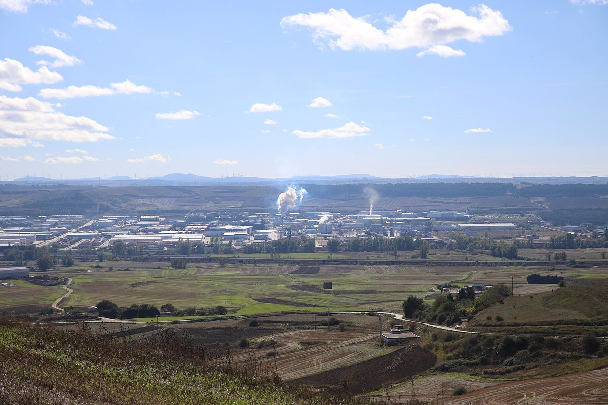

스페인 부르고스 비얄롱케하르 산업단지 에너지 공동체, 1MW 공동 자가소비 태양광 사전 허가…국가 보조 47만6,236유로

업체 약 500곳·기업인협회·시청·지역 재단이 함께 추진…모듈 1,524장 1,043.94kWp, 공동체는 20년 누적 순절감 190만 유로 넘게 예상
스페인 카스티야이레온 주 정부 환경·에너지국이 부르고스시 비얄롱케하르(Villalonquéjar) 산업단지 에너지 공동체가 쓸 1MW 규모 공동 자가소비 태양광 발전소 '아로얄 솔라(Arroyal Solar)'에 사전 행정허가를 내줬다. 사업은 부르고스의 태양광·에너지효율 엔지니어링 업체 노르솔 엘렉트리카(Norsol Eléctrica)가 추진하며, 착공이나 가동 일정은 아직 알려지지 않았다. '비얄롱케하르 지속가능 산업 에너지 공동체'는 산업단지 안에서 출발한 조직으로, 업체 약 500곳과 에너지 공동체 개발 회사 센다 그린(Senda Green), 산업단지 기업인협회(AEPV), 카스티야이레온 기술연구소(ITCL), 부르고스 시청, 카하 데 부르고스 재단이 함께 추진하고 있다. 설비는 산업지구 41~42 필지에 685Wp 모듈 1,524장(합계 1,043.94kWp)과 330kW 인버터 4대, 1,000kVA 변전설비를 두고 100m 지중 중압선으로 13.2kV 배전망에 연결하며, 남는 전기는 요금 상계를 받지 않는 방식이다. 배터리 840kWh와 44kW 급속충전기 4기는 다음 단계로 계획돼 이번 허가 신청에는 들어가지 않았다. 보조 대상 사업비 약 140만 유로 가운데 국가 에너지다변화절약연구소(IDAE)가 47만6,236유로를 보조하기로 했고, 공동체는 20년 동안 회원들에게 누적 순절감 190만 유로 넘게 돌아갈 것으로 내다봤다.
시민에너지 관점
보조 대상 사업비 약 140만 유로의 3분의 1가량을 국가 보조로 메우고, 한 산업단지의 업체들이 발전소 하나를 함께 쓰는 공동 자가소비는 개별 업체가 혼자 감당하기 어려운 설비 투자를 나눠 지는 방식이다. 업체 중심 공동체가 몇몇 큰 업체의 요금 절감 수단에 그칠 수 있다는 우려도 있지만, 이 공동체에는 시청과 지역 재단, 기업인협회, 연구소가 함께 들어가 있어 절감 효과를 단지 안 작은 업체와 지역에 고루 나눌 규칙을 만들 여지가 있다. 산업단지 전기를 바깥 사업자에게서 사 오는 대신 입주 업체와 지역이 발전소의 주인이 되어야 20년 동안 쌓일 절감액이 단지와 지역 안에 남는다. 국내 노후 산단과 RE100 산단 계획도 입주 업체·지자체·주민이 함께 출자하는 공동 자가소비 법인을 제도로 열어 주는 데서 출발해야 한다.
출처: pv magazine España 2026-10-30 Jose Pedrosa 원문 보기
スペイン・ブルゴスのビジャロンケハル工業団地エネルギー共同体、1MWの共同自家消費太陽光に事前許可…国の補助47万6,236ユーロ
約500社・企業家協会・市役所・地元財団が共同で推進…モジュール1,524枚で1,043.94kWp、共同体は20年間の累積純節約額190万ユーロ超を見込む
スペイン・カスティーリャ・イ・レオン州政府の環境・エネルギー局は、ブルゴス市ビジャロンケハル（Villalonquéjar）工業団地のエネルギー共同体が使う1MW規模の共同自家消費型太陽光発電所「アロヤル・ソラール（Arroyal Solar）」に事前行政許可を出した。事業を進めるのはブルゴスの太陽光・省エネ専門エンジニアリング会社ノルソル・エレクトリカ（Norsol Eléctrica）で、着工や稼働の時期はまだ明らかになっていない。「ビジャロンケハル持続可能産業エネルギー共同体」は工業団地の中から生まれた組織で、約500社の企業とエネルギー共同体開発会社センダ・グリーン（Senda Green）、工業団地企業家協会（AEPV）、カスティーリャ・イ・レオン技術研究所（ITCL）、ブルゴス市役所、カハ・デ・ブルゴス財団が共同で推進している。設備は産業地区の41～42区画に685Wpのモジュール1,524枚（合計1,043.94kWp）と330kWのインバーター4台、1,000kVAの変電設備を置き、100mの地中中圧線で13.2kVの配電網につなぐもので、余剰電力は料金相殺を受けない方式をとる。840kWhの蓄電池と44kWの急速充電器4基は次の段階として計画されており、今回の許可申請には含まれていない。補助対象事業費約140万ユーロのうち国のエネルギー多様化・節約研究所（IDAE）が47万6,236ユーロを補助することが決まっており、共同体は20年間で会員に累積190万ユーロを超える純節約効果があると見込んでいる。
市民エネルギーの視点
補助対象事業費約140万ユーロの3分の1ほどを国の補助で賄い、一つの工業団地の企業が一つの発電所を共同で使う共同自家消費は、個々の企業が単独では負担しにくい設備投資を分け合う方式だ。企業中心の共同体が一部の大きな企業の料金節約の手段にとどまりかねないとの懸念もあるが、この共同体には市役所や地元財団、企業家協会、研究所も加わっており、節約効果を団地内の小さな企業や地域に広く分ける規則をつくる余地がある。工業団地の電気を外部の事業者から買う代わりに、入居企業と地域が発電所の持ち主になってこそ、20年間に積み上がる節約額が団地と地域の中に残る。韓国の老朽工業団地やRE100産業団地の計画も、入居企業・自治体・住民が共同で出資する共同自家消費法人を制度として認めるところから始めるべきだ。
出典: pv magazine España 2026-10-30 ホセ・ペドロサ（Jose Pedrosa） 原文を読む
西班牙布尔戈斯比亚隆克哈尔工业园区能源社区1MW集体自用光伏获预先许可…国家补助47万6,236欧元
约500家企业、企业家协会、市政府和本地基金会共同推动…1,524块组件合计1,043.94kWp，社区预计20年累计净节省超过190万欧元
西班牙卡斯蒂利亚-莱昂自治区政府环境与能源厅向布尔戈斯市比亚隆克哈尔（Villalonquéjar）工业园区能源社区将使用的1MW集体自用光伏电站"阿罗亚尔太阳能（Arroyal Solar）"发放了预先行政许可。项目由布尔戈斯一家专注光伏和能效的工程公司诺尔索尔电气（Norsol Eléctrica）推进，开工和投运时间尚未公布。"比亚隆克哈尔可持续工业能源社区"是在工业园区内部诞生的组织，由约500家企业、能源社区开发公司森达绿色（Senda Green）、工业园区企业家协会（AEPV）、卡斯蒂利亚-莱昂技术研究所（ITCL）、布尔戈斯市政府和布尔戈斯储蓄银行基金会共同推动。设备位于产业区第41～42号地块，包括1,524块685Wp组件（合计1,043.94kWp）、4台330kW逆变器和1,000kVA变电设施，经100米地下中压线接入13.2kV配电网，余电不参与电费抵扣。840kWh电池和4台44kW快充桩计划在下一阶段建设，不在此次许可申请范围内。在约140万欧元的补助对象项目费中，国家能源多元化与节能研究所（IDAE）确定补助47万6,236欧元；社区预计20年内为会员带来累计超过190万欧元的净节省。
市民能源视角
约140万欧元补助对象项目费中约三分之一由国家补助填补，一个工业园区的企业共同使用一座电站的集体自用模式，让单个企业难以独自承担的设备投资得以分摊。有人担心以企业为主的社区可能只是少数大企业节省电费的工具，但这个社区还有市政府、本地基金会、企业家协会和研究所参与，有空间制定规则，把节省的效益公平分给园区内的小企业和当地。与其从外部供应商购买园区用电，不如让入驻企业和地方成为电站的主人，20年累积的节省才会留在园区和地方。韩国老旧产业园区和RE100产业园区的规划，也应从在制度上允许入驻企业、地方政府和居民共同出资成立集体自用法人做起。
来源: pv magazine España 2026-10-30 何塞·佩德罗萨（Jose Pedrosa） 查看原文
Energy community at Burgos's Villalonquéjar industrial estate wins prior approval for 1 MW shared self-consumption solar plant; state grant of 476,236 euros
About 500 companies, the estate's business association, the city council and a local foundation are behind it; 1,524 modules total 1,043.94 kWp, and the community expects more than 1.9 million euros in net savings over 20 years
The environment and energy department of Spain's Castilla y León regional government has granted prior administrative authorisation for 'Arroyal Solar', a 1 MW shared self-consumption solar plant to serve the energy community of the Villalonquéjar industrial estate in the city of Burgos. The project is being developed by Norsol Eléctrica, a Burgos engineering firm specialising in solar power and energy efficiency, and no dates for construction or start of operation have been announced. The 'Villalonquéjar Sustainable Industrial Energy Community' grew out of the estate itself and is backed by about 500 companies, energy community developer Senda Green, the estate's business association (AEPV), the Castilla y León Technology Institute (ITCL), Burgos city council and the Caja de Burgos Foundation. The installation on plots 41-42 of the industrial area comprises 1,524 modules of 685 Wp (1,043.94 kWp in total), four 330 kW inverters and a 1,000 kVA transformer station, connected to the 13.2 kV distribution grid by a 100-metre underground medium-voltage line, with surplus power not eligible for bill offsetting. An 840 kWh battery and four 44 kW fast chargers are planned for a later phase and are not part of this application. Of an eligible budget of about 1.4 million euros, the national energy diversification and saving institute (IDAE) has awarded a grant of 476,236 euros, and the community expects its members to see cumulative net savings of more than 1.9 million euros over 20 years.
Citizen Energy View
With roughly a third of an eligible budget of about 1.4 million euros covered by a state grant, shared self-consumption, in which the companies on one estate jointly use a single plant, spreads an investment that individual firms would struggle to make alone. There may be concerns that a business-led community ends up as a bill-cutting tool for a few large firms, but with the city council, a local foundation, the business association and a research institute also involved, there is room to set rules that share the savings fairly with smaller firms on the estate and the wider area. Only if tenant companies and the local community own the plant, rather than buying the estate's power from outside suppliers, will savings built up over 20 years stay on the estate and in the region. Plans for Korea's ageing industrial complexes and RE100 industrial parks should likewise start by opening the way, in law, for shared self-consumption entities jointly funded by tenant firms, local governments and residents.
Source: pv magazine España 2026-10-30 Jose Pedrosa Read the original